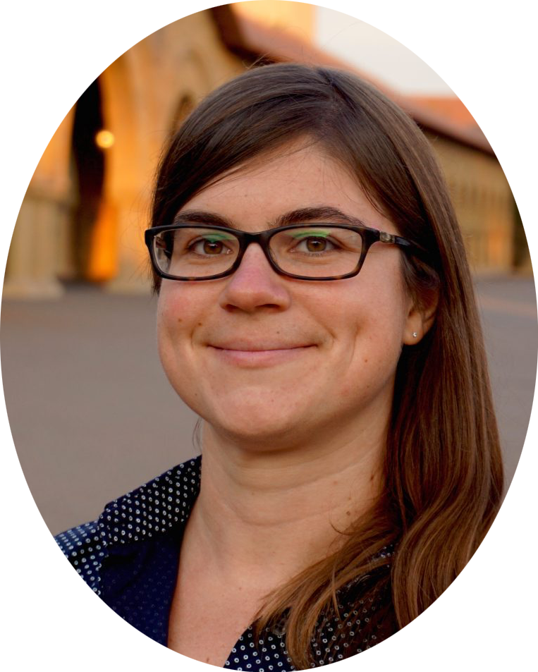
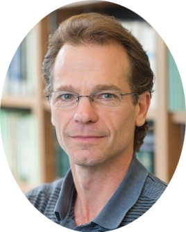
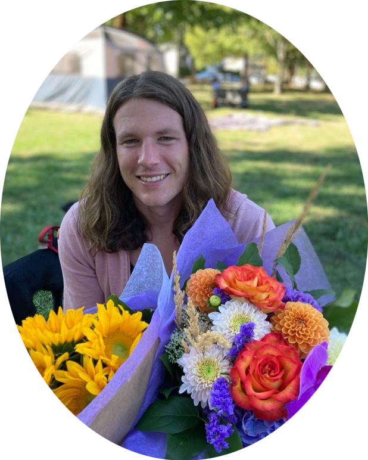
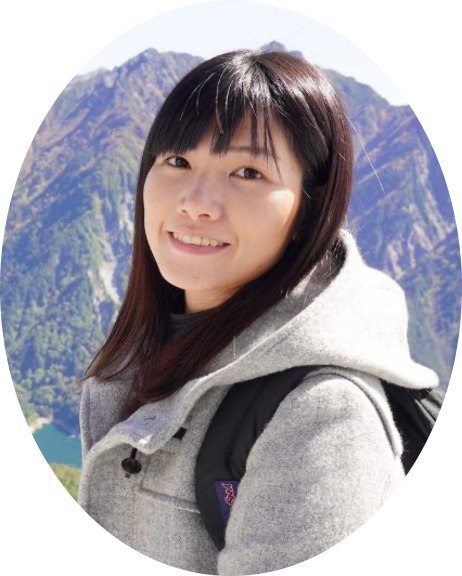
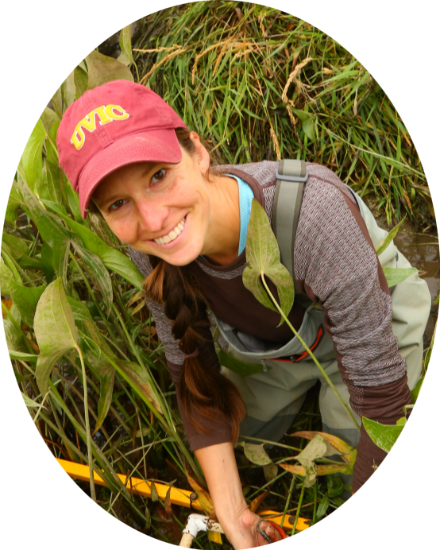
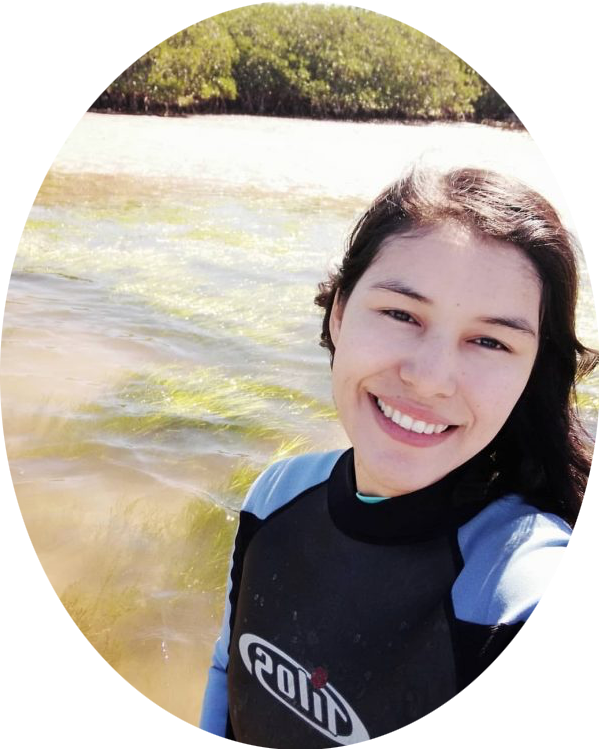

People
Faculty and Staff

| Name | Dr. Sara Helen Knox |
| Pronouns | She/Her/Hers |
| sara.knox@mcgill.ca | |
| GitHub | https://github.com/sknox01 |
I am broadly interested in the impacts of climate variability and land-use change on land-atmosphere exchanges of water, energy, and trace gases. I also seek to understand how ecosystem responses to global change can feedback to slow or accelerate future climate change. My research and training is in micrometeorology, hydrology, and ecosystem ecology. I focus on biosphere-atmosphere interactions in a variety of climates and ecosystems.
- Education
- University of California, Berkeley, PhD
- Carleton University, MSc
- McGill University, BSc

| Name | Rick Ketler - Project Manager (Geography) |
| rick.ketler@ubc.ca | |
| Office | PCMH B1100 |
Currently Research Projects Manager for UBC Geography Physical Labs. I have designed and installed research sites in terrain ranging from temperate bogs to arctic tundra. I primarily support professors, PDF’s and grad students with physical scientific measurements in the field and in the lab.
- Education
- B.Sc. Physics Co-op University of Victoria, B.C.

| Name | Zoran Nesic - Senior Research Engineer |
| zoran.nesic@ubc.ca | |
| Office | MCML 137 |
I am responsible for management of numerous research and equipment design projects for various faculties and departments at UBC. I design eddy covariance and soil respiration systems that are used at various North American universities as well as by other research institutions. My main research interests are (1) the design of automated measurement systems for long-term environmental measurements and (2) the standardization of measurement and data processing procedures to ensure high quality and reproducibility of research results.
- Education
- B.Sc. in Electrical Engineering, University of Belgrade
- M.A.Sc. in Electrical Engineering, University of British Columbia
Current Students and PostDocs

| Name | Dr. June Skeeter |
| Position | Postdoctoral Scholar |
| Pronouns | They/Them/Theirs |
| june.skeeter@ubc.ca | |
| Office | Geography Room 127 |
| GitHub | https://github.com/June-Skeeter |
My name is June. I am a geographer, researcher, and educator who has been living as an uninvited guest on unceded Coast Salish Territory since 2015. I received a PhD in geography from UBC in 2022 and am now working as a postdoctoral researcher for the UBC Micrometeorology group. I study greenhouse gas exchange in wetland ecosystems and associated feedback mechanisms that influence the earth’s climate system. My research employs a variety of methods from different fields, including: micrometeorology, remote sensing, spatial analysis, and machine learning.
| Name | Dr. Joyson Ahongshangbam |
| Position | Postdoctoral Scholar |
| joyson.ahongshangbam@mcgill.ca | |
| Orcid | https://orcid.org/0000-0002-2678-6879 |
I am interested in studying the carbon and water cycle in different ecosystems (forest, urban vegetation and wetlands) using observations such as eddy covariance, sap flow and remote sensing techniques. My research includes understanding the responses of carbon and water dynamics with the land cover change, management activities and climate change (drought and heatwave).
Previous experience University of Helsinki, Finland, Postdoctoral researcher
Education University of Göttingen, Germany, PhD Indian Institute of Remote sensing, India, Masters

| Name | Tzu-Yi Lu |
| Level of Study | Ph.D. Candidate |
I received my MS in Geography from National Taiwan University in 2017. I am interested in understanding the response of the wetland ecosystem to climate change, especially in quantifying the net exchange of carbon. My previous research investigated the relationship between environmental controls and CO2 flux in low-latitude wetland ecosystems, applying an Artificial Neural Network technique to simulate the variance of carbon exchange by meteorological variables.

| Name | Katrina Poppe |
| Pronouns | She/Her/Hers |
| Level of Study | Ph.D. Candidate |
| poppek@student.ubc.ca |
I earned an MS in Environmental Science from Western Washington University in 2016 and continued at WWU as a Research Associate for several years. My previous research has focused primarily on blue carbon, studying soil carbon sequestration rates in Pacific Northwest estuaries and in United Arab Emirates mangroves, in addition to monitoring and modeling vegetation and sediment dynamics in relation to estuary restoration and sea level rise. I am currently interested in studying greenhouse gas fluxes in Pacific Northwest tidal wetlands – particularly how they respond to ecosystem restoration and climate change – to ultimately better understand the value of tidal wetland management actions as natural climate solutions.
| Name | Sarah Russell |
| Level of Study | Ph.D. Student |
I received a BS in Biological Sciences from Wellesley College in 2017, then worked as an ecosystem ecology field technician and research assistant before moving to Vancouver. I am interested in land-atmosphere carbon dynamics and am particularly interested in quantifying the terrestrial carbon sink. My research at UBC involves modeling greenhouse gas fluxes from restored tidal wetlands in the Sacramento-San Joaquin River Delta.

| Name | Ted Scott |
| Pronouns | He/Him/His |
| Level of Study | Ph.D. Student |
| tedjs@student.ubc.ca |
Prior to UBC, while at the University of Minnesota, I earned a BS in Computer Science (1997), then a MS (2000) and PhD in Geophysics (2006) under David Kohlstedt, investigating the dynamic properties of partially molten peridotites. My work helped constrain the composition and behavior of highly molten planetary interiors such as Jupiter’s moon Io. I then worked at Microsoft for several years as a data scientist and engineer, and more recently as a high-school science and math teacher. My current research interests include studying greenhouse gas fluxes in wetland environments. I then synthesize the data collected across multiple sites in various environments to better understand how individually and collectively they can contribute as a natural climate solution. As in my prior PhD, I hope my work can be used to better constrain climate models and lead to sound policy as we address climate change. In my free time, I enjoy trail running and rock climbing.
| Name | Hehan (Zoe) Zhang |
| Pronouns | She/Her/Hers |
| Level of Study | M.Sc. Student |
| hehanzha@student.ubc.ca |
I received a BSc in Environmental Science from the University of British Columbia in 2022. My undergraduate thesis research investigated the impacts of fire on greenhouse gas (GHG) fluxes (CO2, CH4, and N2O) within different burned zones of a bog. The methodology incorporated chamber measurements and gas chromatography for the analysis. Currently, as a second-year MSc student, I am examining the impacts of seedling removal — a post-fire management practice — on the GHG fluxes (CO2 and CH4) within the 2016 burned zone of the Burns Bog, Delta, BC. This research utilizes a smart chamber with a portable analyzer. Additionally, I am interested in quantifying the net carbon exchange at the ecosystem scale using eddy covariance techniques and understanding carbon dynamics across varying ecosystem types.

| Name | Vanessa Valenti |
| Level of Study | M.Sc. Student |
I earned a Bachelor’s degree in Geography/Environmental Studies from the University of California, Los Angeles in 2019. Before coming to UBC, I worked as a scientific programmer at the NASA Goddard Space Flight Center, providing visualization and computation support to earth system and atmosphere climate models. I am interested in modelling land-atmosphere exchanges and projecting responses of wetland and forested ecosystems to climate change.

| Name | Kelsey McGuire |
| Pronouns | She/Her/Hers |
| Level of Study | B.Sc. Student |
| kmcgu@student.ubc.ca |
I am currently doing a B.Sc in Geographical Sciences, with concentrations in Climatology and Geographic Information Systems. Within the lab, I am supporting various graduate students with their research on how wetland and tidal sites can act as natural climate solutions, where I will help to write code for data processing, and assist on field site visits. I hope in later years to conduct more research on land-atmosphere exchanges, specifically around the carbon cycle, and find ways to incorporate different GIS technologies to help in visualizing it.

| Name | Himari Honda |
| Pronouns | She/Her/Hers |
| Level of Study | B.Sc. Student |
| hhonda02@student.ubc.ca |
I am an undergraduate student at UBC majoring in Geographical Sciences with a concentration in climatology. My work in the lab consists of facilitating graduate students with their research and field visits to the flux towers. I am currently working with Zoe Zhang to pursue further research on the effects of heatwaves on carbon dioxide and methane fluxes at restored peatlands. In the near future, I am interested in studying how greenhouse gas exchange is influenced by varying biophysical and meteorological factors.
Lab Alumni
- Darian Ng
- (M.Sc. Student)
- Adin Litman
- (B.Sc. Student)
- Tin Satriawan
- (M.Sc. Student)
- Dr. Sung-Ching (Nick) Lee
- (Postdoctoral Scholar)
- Marion Nyberg
- (M.Sc. Student)

- Aylin Barreras-Apodaca
- (Visiting International M.Sc. Student)

- Nicole Choi
- (B.Sc. Student)
- Cristina Mace
- (B.Sc. Student)
- Azumi Konaka
- (B.Sc. Student)

- Weiwen Fu
- (B.Sc. Student)